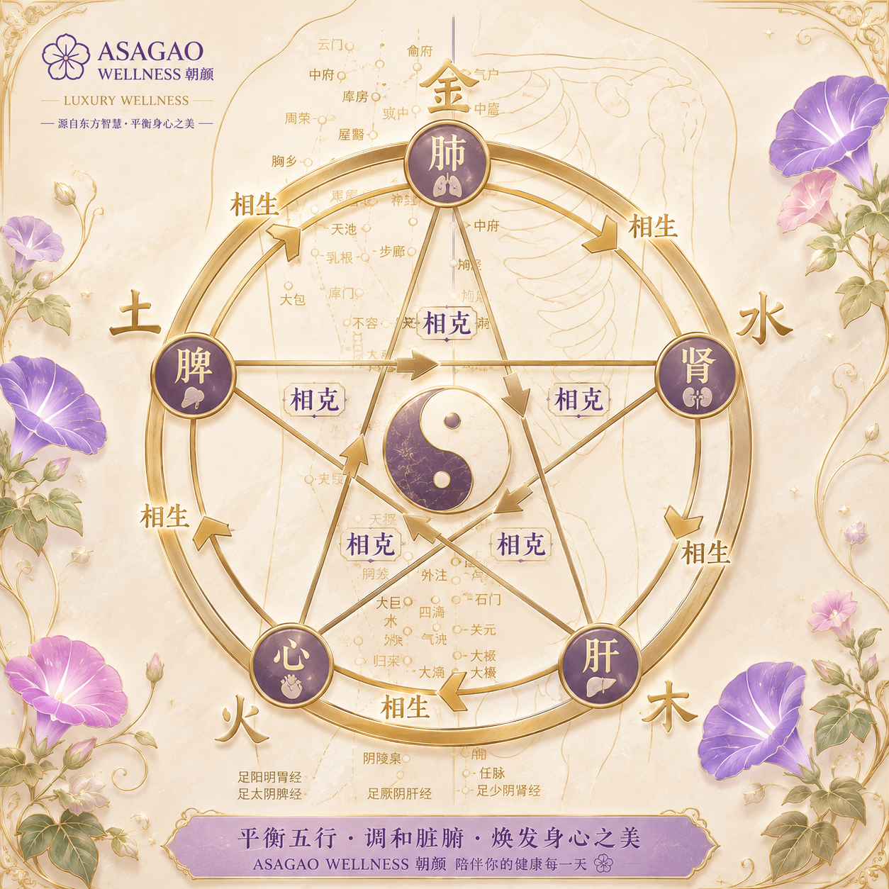

Reference: WHO Standard Acupuncture Point Locations
Slow luxury wellness · Therapeutic touch · Somatic restoration
ASAGAO Wellness explores quiet luxury wellness, ritual care, nervous system restoration, and holistic bodywork through a refined, sensory, and mindful approach.
The project integrates Eastern healing philosophy, therapeutic touch, breath awareness, and slow living principles into a contemporary wellness experience.
Wellness is framed not only as physical relaxation, but as a deeper practice of presence, restoration, emotional grounding, and reconnection with the body.

Quiet luxury wellness · Ritual care · Eastern healing aesthetics
A calming ritual focused on the head, scalp, and nervous system relaxation.
A gentle facial wellness ritual for softening tension and restoring calm expression.
A restorative hand ritual designed to support sensory restoration and emotional grounding.
A deeply restorative arm ritual designed to release muscular tension, improve circulation, soften fascia restriction, and restore a grounded sense of physical ease and nervous system balance.
A gentle ritual supporting breath awareness, openness, and release of upper-body tension.
A grounding ritual focused on the abdomen, digestive comfort, and inner stability.
A lower-body treatment supporting lightness, circulation, and physical grounding.
A grounding foot ritual designed to restore balance, warmth, and deep relaxation.
A focused release ritual for accumulated tension around the neck, shoulders, and upper back.
A restorative back treatment supporting muscular ease, breath, and postural comfort.
A therapeutic release focused on hip tension, lower-body support, and structural balance.
A posterior-leg treatment supporting mobility, recovery, and grounded relaxation.
A complete ritual integrating therapeutic touch, breath, sensory restoration, and calm presence.
A warming therapy using stones to support muscular release and deep nervous system settling.
A traditional-inspired technique supporting circulation, tissue release, and energetic flow.
A warming wellness practice rooted in Eastern healing traditions.
A therapeutic technique using suction to support tissue mobility and muscular release.
A traditional modality supporting balance, regulation, and holistic well-being.
Simple self-massage practices for everyday restoration and body connection.
A mindful movement practice cultivating balance, flow, and internal calm.
A contemplative body practice supporting flexibility, breath awareness, and mental ease.
A mindful movement method supporting posture, stability, and body awareness.
A quiet ritual of tea, breath, and sensory presence.
A wellness approach exploring food, seasonality, and nourishment as daily medicine.